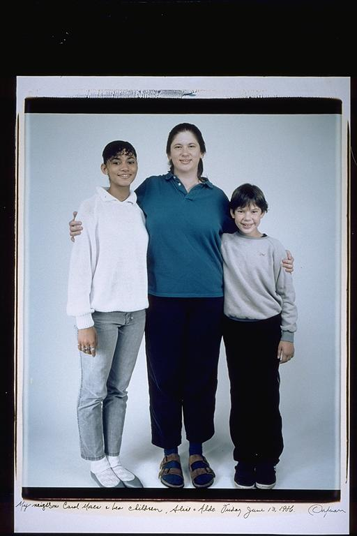

Aldo: This is my family. Well it's part of my family, the part I grew up with. When I was nine, I remember my sister who was six and a half years older than me, seemed to always be doing fun things. I suppose it appeared so fun, cause I was not allowed to hang out with her and her friends, so I never knew what they did. And not knowing, I just assumed it was really fun, like any kid would. The unknown is fascinating, and it's all unknown when you're nine years old.
Eugene: The Moses Family(1): June 13, 1986 -- The family resemblance among the Moses is striking to me. Carol has very strong genes. I was lucky enough to live with Aldo and his mother years later and that was great. I owe both the Moses and the Silverglate/Dorfmans so much for helping me to develop into the man I am today. I also remember looking up to Alice and especially when she went to UC Berkeley, I thought college was so far away and so big and bad. Now that it's over it wasn't so big and bad. Aldo used to tell me stories about Alice and all of her famous friends (actors, athletes, etc. ... fellow graduates of Rindge). I also remember one of Alice's girlfriends, Fanchin was the first girl to play for the boys' football team.
